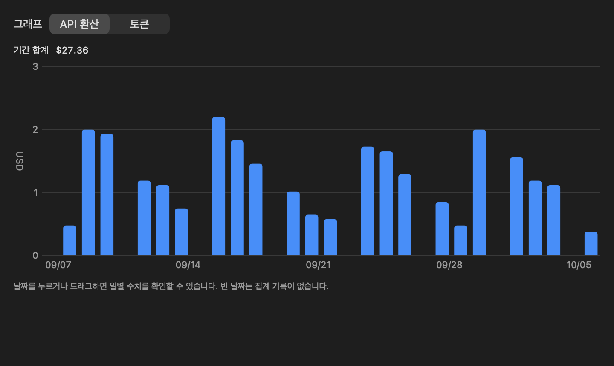
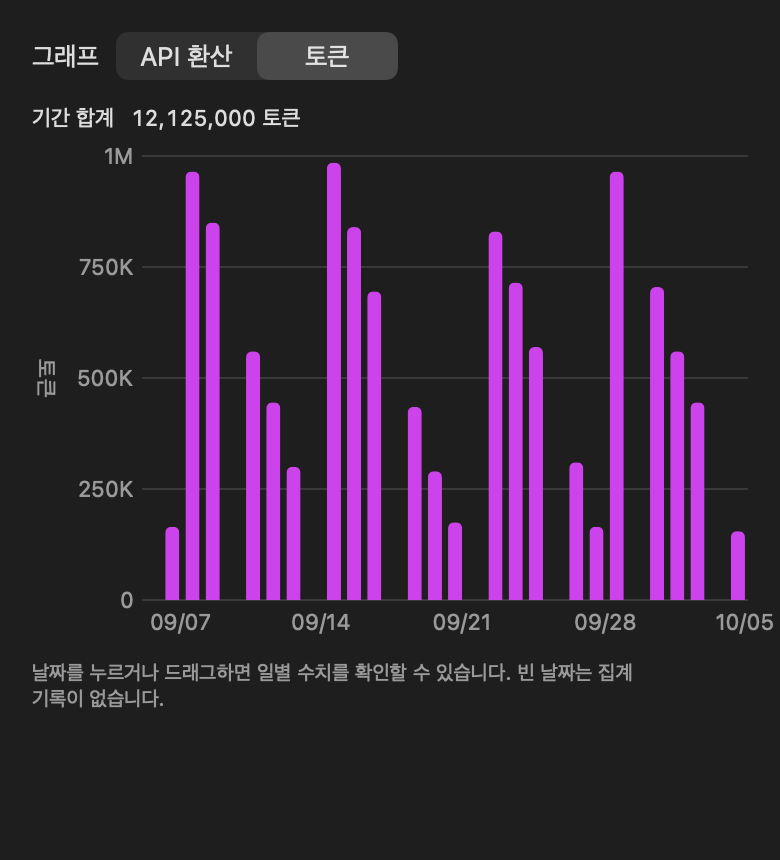

Limits across accounts
View up to six accounts, their available 5-hour and weekly limits, and reset times. Mac menu-bar access keeps the current account nearby.
Check account limits, daily tokens, and API-equivalent costs across your Mac and iPhone.

Keep account limits and measured token activity together, with separate views for what each number means.
View up to six accounts, their available 5-hour and weekly limits, and reset times. Mac menu-bar access keeps the current account nearby.
Switch one bar chart between tokens and API-equivalent cost. Choose the last 7 or 30 calendar days and inspect individual dates.
Check remaining limits, token estimates, and activity in widgets. Enable reminders for resets, exhausted weekly limits, and expiring reset credits.
Use your Apple account to sync account details and settings. Enable token-statistics sync separately to combine records from multiple Macs.
Token statistics come from Codex session logs on your Mac. The iPhone receives those statistics through optional iCloud sync.

API-equivalent cost uses recorded tokens and model prices. It is not your subscription charge or an API bill. Unknown models are excluded from cost until assigned a price.
USD and KRW are supported. KRW uses the selected exchange rate across the full period. Missing logs, web-only usage, and unsynced Macs can leave gaps.
Read privacy detailsPublic download links and distribution details have not been published. The app currently uses Codex authentication and usage endpoints without a general third-party public API contract.
It is an independent, unofficial utility. Compatibility can change when OpenAI changes those services.
Setup guide